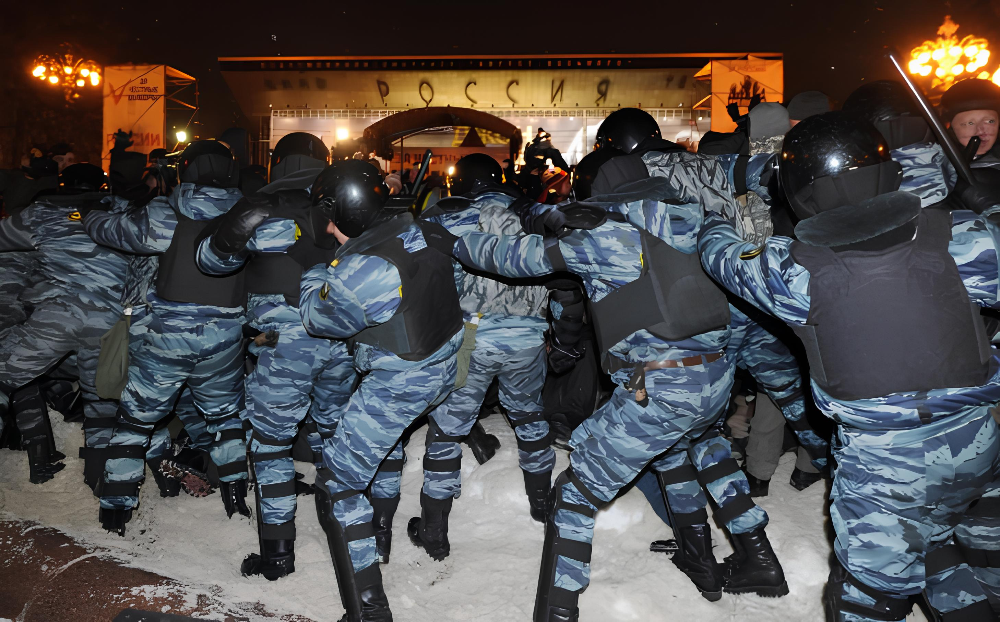
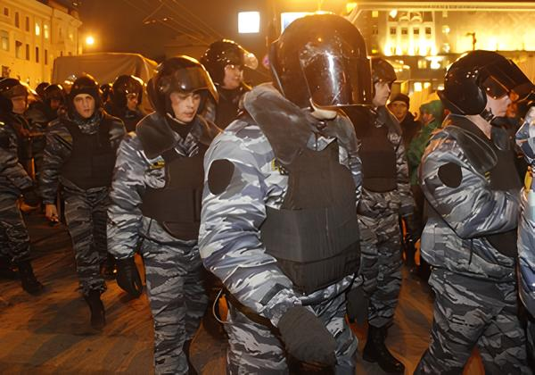
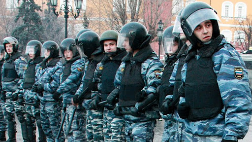
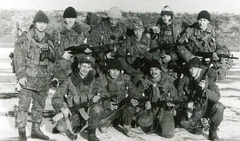

Кодекс

Примечание: Кодекс является дополнением к Уставу ЛОР и определяет обязанности, принципы поведения и ответственность гвардейцев. [Устав ЛОР]
- Гвардеец обязан стойко и мужественно переносить все тяготы и лишения военной службы, беречь военное имущество, а также беспрекословно выполнять приказы командиров, соблюдая присягу.
- Гвардеец обязан соблюдать внутренний порядок, дисциплину, четко выполнять приказы командиров, содержать в исправности оружие.
- Каждый гвардеец отвечает за свои действия и решения.
- Каждый гвардеец должен вести себя достойно и не позорить имя Лиги и Гвардии, в том числе.
- Если боец обнаружит нарушение Кодекса или Устава ЛОР, он обязан пресечь нарушение и доложить вышестоящему по званию, даже если нарушителем является старший по званию.
- Гвардеец обязан быть хорошо обучен военному делу и постоянно совершенствовать свои навыки.
- Боец обязан соблюдать субординацию и уважительно относиться к старшим по званию.
- Гвардеец обязан поддерживать честь, достоинство и репутацию Гвардии.
- Боец обязан проявлять стойкость и мужество, противостоя врагу до последней капли крови.
- Гвардеец обязан честно выполнять свои обязанности и служить делу Гвардии.
- Гвардеец обязан помогать товарищам по службе и действовать в интересах подразделения.
Звания

Звания Гвардии Иркутска:
- Коммандер - Командир Гвардии.
- Адъютант - Заместитель коммандера.
- Сотник - Офицер гвардии, имеет большой опыт и может командовать подразделением.
- Подсотник - Опытный боец, может командовать группой или подразделением в отсутствие офицеров.
- Старшой - Просто отличный солдат. Не может никем командовать.
- Солдат - Рядовой боец Гвардии.
Система повышений Гвардии Иркутска

Солдат → Старшой
- Прослужить не менее 2 дней в подразделении.
- Участие минимум в 5 патрулях или 3 боевых операциях.
- Проявить дисциплину и выполнять приказы.
Старшой → Подсотник
- Прослужить не менее 7 дней (недели) в звании Старшего.
- Принять участие минимум в десяти операциях или патрулях.
- Проявить дисциплину и выполнять приказы..
- Не иметь серьёзных нарушений.
Подсотник → Сотник
- Иметь опыт службы.
- Проявить лидерские качества.
- Успешно командовать небольшой группой во время операции.
- Провести 2 инструктажа для солдат.
- Получить рекомендацию от Сотника или Коммандера.
Сотник → Адъютант
[Это повышенные, выдаются выборочно самим капитаном.]
- Большой опыт службы.
- Проявить лидерские качества.
- Успешное руководство.
- Авторитет среди бойцов.
- Умение командовать группами.
Адъютант → Коммандер
[Назначается только при смене командира.]
- Большой опыт службы.
- Успешное руководство операциями.
- Авторитет среди бойцов.
- Умение планировать операции и командовать подразделением.
Дополнительные способы повышения
[Без отчетов, просто показать себя.]
- Героизм во время операции.
- Спасение бойцов или граждан.
- Успешное выполнение особо важного задания.
- Долгую и безупречную службу.
Традиции

[29 ноября] День памяти погибших на Байкальском фронте
Во время боевых действий, получивших название «Байкальский фронт», силы Протекции смогли за первую неделю пешим ходом продвинуться примерно на 120 километров вглубь северных территорий Иркутской республики. Казалось, что победа близка, и в кабинетах Протекции уже делили будущие земли. Но бойцы, будучи слабо вооруженными, всё равно смогли одержать победу. Сотни из них остались лежать в земле, погибнув за наше будущее. Мы должны помнить об их подвиге.
[23 августа] День независимости Иркутской республики
Именно в этот памятный день Иркутск официально и бесповоротно обрёл свою долгожданную независимость, навсегда утвердив себя на политической карте мира как свободное, суверенное государство. Провозглашение суверенитета стало важнейшей исторической вехой, подведшей черту под долгими годами борьбы. Это событие ознаменовало начало новой эпохи для всех граждан республики, которые отныне сами вершили свою судьбу и строили будущее своей родины.
[6 декабря] День Военной Гвардии Иркутска
Этот знаменательный день отныне и навеки посвящается официальному созданию доблестной Гвардии Иркутска, ведь новому независимому государству требовался надёжный щит для защиты своих рубежей и покоя граждан.